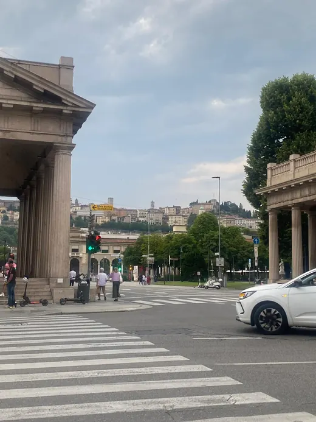
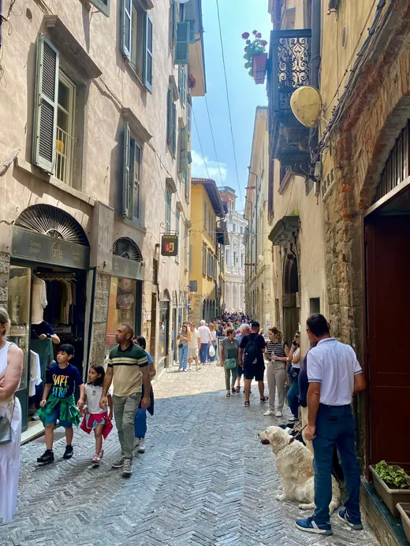
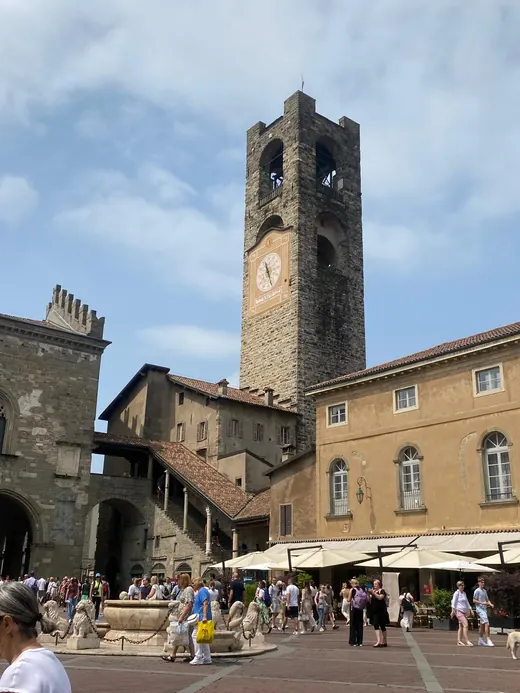
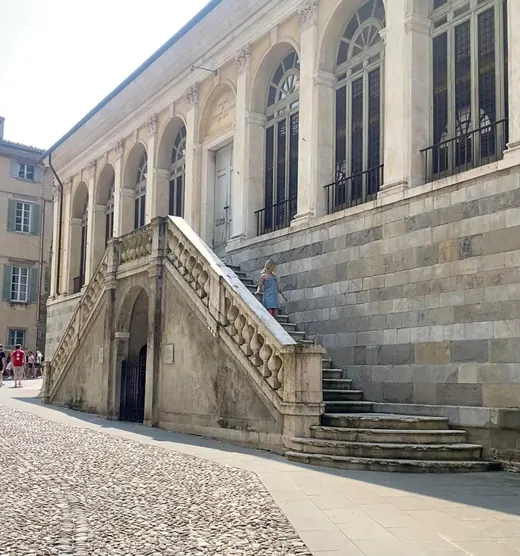
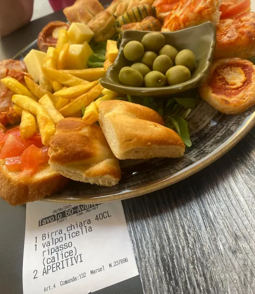
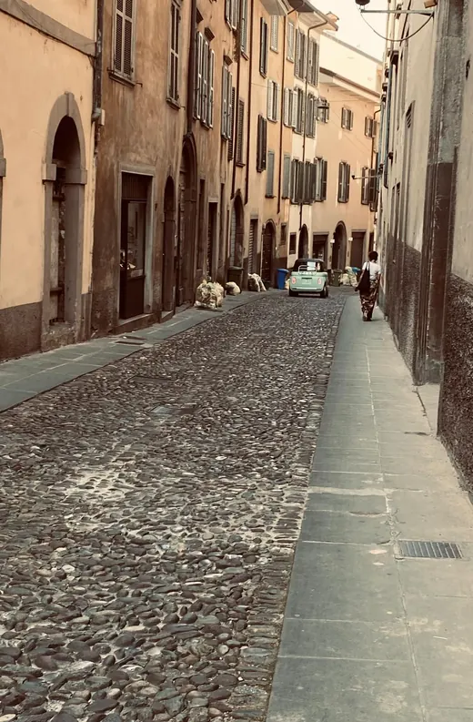
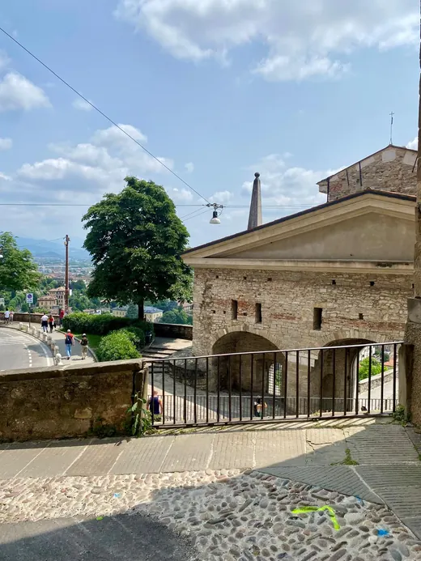

Czy jeden dzień wystarczy na Bergamo?
Tak, jeden pełny dzień wystarczy, żeby zobaczyć najważniejsze miejsca w Bergamo i poczuć charakter miasta. Nie próbowałabym jednak w tym samym czasie dokładać jeziora Como albo Mediolanu. Bergamo ma dwie bardzo różne części, nowocześniejszą Città Bassa i historyczną Città Alta, dlatego szkoda przejechać przez nie w pośpiechu tylko po to, żeby zaliczyć kolejny punkt.
Mój plan najlepiej sprawdzi się, jeśli możesz zacząć około 9:00 i zostać przynajmniej do 17:00. Sama lubię rozpoczynać w dolnym mieście. Dzięki temu stopniowo zbliżasz się do wzgórza, a panorama Città Alta robi coraz większe wrażenie. Najważniejsze zabytki leżą blisko siebie, więc po wjeździe kolejką większość trasy pokonasz pieszo.
Bergamo w jeden dzień: plan godzinowy
Godziny potraktuj orientacyjnie. Jeśli długo zatrzymujesz się w kościołach, fotografujesz każdy zaułek albo lubisz spokojne obiady, dodaj sobie godzinę zapasu. Trasa od dworca do Porta San Giacomo ma około 7 kilometrów, nie licząc wejścia na wieżę i dodatkowych uliczek.
| Godzina | Miejsce | Ile czasu? | Mój cel |
|---|---|---|---|
| 9:00 | Dworzec i Porta Nuova | 45 min | pierwszy widok na Città Alta |
| 9:45 | Sentierone i okolice Donizettiego | 45 min | kawa i spokojny spacer |
| 10:30 | Kolejka lub wejście pieszo | 30 do 60 min | przejazd do Città Alta |
| 11:15 | Via Gombito i Piazza Vecchia | 90 min | historyczne serce miasta |
| 12:45 | Piazza Duomo | 75 min | bazylika i Cappella Colleoni |
| 14:00 | Lunch lub aperitivo | 60 min | lokalna przerwa bez pośpiechu |
| 15:00 | Uliczki i mury weneckie | 90 min | spokojniejsza strona Bergamo |
| 16:30 | Porta San Giacomo | 30 min | widok na dolne miasto |
Jeżeli ten dzień jest częścią dłuższego wyjazdu, zobacz także mój plan Lombardii w 4 dni. Pokazuję w nim, jak połączyć Bergamo z jeziorem Como i Mediolanem bez wynajmowania samochodu.
Krok 1: Città Bassa od Porta Nuova

Po wyjściu z dworca idź prosto Viale Papa Giovanni XXIII. Już po kilkunastu minutach zobaczysz dwa jasne budynki Porta Nuova, a pomiędzy nimi Città Alta na wzgórzu. To mój ulubiony moment na pierwsze zdjęcie, bo od razu widać, jak zbudowane jest Bergamo. Nie musisz szukać skomplikowanej trasy. Wystarczy iść za panoramą.
Przejdź przez okolice Sentierone, szerokiej promenady, przy której codzienne życie miesza się z elegancką architekturą. W pobliżu znajdziesz Teatro Donizetti oraz niewielki park z pomnikiem kompozytora Gaetana Donizettiego, który urodził się w Bergamo. To dobre miejsce na krótką przerwę przed podejściem do Górnego Miasta.
Jeśli zależy Ci tylko na zabytkach Città Alta, możesz od dworca podjechać autobusem linii 1. Ja przy pierwszej wizycie polecam jednak przejść ten odcinek pieszo. Dolne miasto nie jest dodatkiem do Bergamo. Daje kontrast, porządkuje trasę i pozwala zobaczyć, jak historyczne wzgórze góruje nad współczesnym centrum.
Krok 2: kolejka i wejście do Città Alta
Do dolnej stacji kolejki Funicolare di Città Alta dojdziesz z Porta Nuova w około 15 minut. Kolejka działa w ramach miejskiego systemu ATB i jest najwygodniejszym sposobem wejścia na wzgórze. W sezonie przy kasie potrafi ustawić się długa kolejka. Jeśli widzę, że oczekiwanie będzie dłuższe niż sam spacer, wybieram schody i podejście wzdłuż murów.
Wygodne buty naprawdę mają znaczenie. W Górnym Mieście czekają brukowane ulice, nierówne kamienie i schody. W klapkach da się przejść, ale cały dzień będzie mniej przyjemny. Przy ograniczonej mobilności postawiłabym na autobus lub kolejkę, a Porta San Giacomo oglądała z góry bez schodzenia stromą drogą.
Krok 3: Via Gombito i Piazza Vecchia


Po wyjściu z kolejki znajdziesz się przy Piazza Mercato delle Scarpe. Stąd idź Via Gombito, jedną z głównych ulic Città Alta. Jest tu sporo sklepów i lokali, ale warto też zaglądać w boczne przejścia. Zamiast patrzeć wyłącznie w mapę, wypatruj kamiennych portali, małych dziedzińców i widoków otwierających się między budynkami.
Via Gombito doprowadzi Cię prosto na Piazza Vecchia. To historyczne serce Górnego Miasta z Fontanną Contarini, Palazzo della Ragione, biblioteką Angelo Mai i wieżą Campanone. Oficjalny serwis Visit Bergamo nazywa plac centrum dawnej władzy politycznej miasta i trudno się z tym nie zgodzić. Zatrzymaj się tutaj na dłużej, bo każdy bok placu wygląda inaczej.
Jeżeli pogoda jest dobra i lubisz punkty widokowe, rozważ wejście na Campanone. Z góry zobaczysz dachy Città Alta i góry. Godziny otwarcia bywają sezonowe, dlatego nie wpisuję wieży jako obowiązkowego punktu o konkretnej porze. Sprawdź je przed wyjazdem. Jeśli masz lęk wysokości albo mało czasu, sam plac nadal daje pełne doświadczenie tej części miasta.
Chcesz mieć trasę, mapy i wskazówki w telefonie?
W interaktywnym przewodniku po Lombardii zebrałam dokładny plan, transport, restauracje i warianty na gorszą pogodę.
Krok 4: Piazza Duomo, bazylika i Cappella Colleoni

Przejdź pod arkadami Palazzo della Ragione, a znajdziesz się na niewielkim Piazza Duomo. Na kilku metrach stoją tu katedra, bazylika Santa Maria Maggiore, baptysterium i Cappella Colleoni. To miejsce jest kameralne, ale bardzo intensywne wizualnie. Fasada kaplicy przyciąga wzrok kolorowym marmurem, a wnętrze bazyliki zaskakuje bogactwem dekoracji.
Do świątyń wchodzę spokojnie i zawsze sprawdzam, czy nie trwa nabożeństwo. Zabieram też coś, czym mogę zakryć ramiona. Nawet jeśli latem na zewnątrz jest bardzo gorąco, wewnątrz warto zachować odpowiedni strój i ciszę. Nie planowałabym w tym miejscu wizyty na pięć minut. Daj sobie przynajmniej 45 minut, a jeśli lubisz sztukę sakralną, nawet godzinę.
Krok 5: co zjeść w Bergamo?


W Bergamo warto spróbować casoncelli alla bergamasca, nadziewanego makaronu podawanego zwykle z masłem, szałwią i dodatkami. Drugim lokalnym klasykiem jest polenta, często łączona z mięsem albo serem. Na deser wypatruj polenta e osei, małego ciastka, które wyglądem nawiązuje do tradycyjnego dania. Jeśli wolisz coś lekkiego, wybierz pizzę, focaccię albo aperitivo.
Nie podaję jednej restauracji jako jedynego słusznego wyboru. Lokale i ich poziom potrafią się zmieniać. Sprawdzam najnowsze opinie, patrzę na krótkie menu i odchodzę jedną lub dwie ulice od najbardziej zatłoczonego placu. W porze obiadu unikaj miejsca, które ma ogromne menu ze zdjęciami wszystkiego. Wolę kilka dań i stoliki, przy których siedzą również mieszkańcy.
Na jedzenie przeznacz pełną godzinę. Ten plan nadal zmieści się w jednym dniu, a Ty nie będziesz zwiedzać głodna. Włoski posiłek jest częścią podróży, nie przeszkodą w realizacji listy.
Krok 6: mury weneckie i Porta San Giacomo

Po obiedzie odejdź od głównej Via Colleoni i przejdź przez spokojniejsze uliczki w stronę murów weneckich. Ufortyfikowany obwód otacza Città Alta, a jego odcinki należą do wpisu UNESCO obejmującego weneckie dzieła obronne. Nie musisz przechodzić całych murów. W ciągu jednego dnia ważniejsza jest jakość spaceru niż liczba kilometrów.
Trasę zakończ przy Porta San Giacomo. Jasna brama i kamienna droga tworzą jeden z najbardziej rozpoznawalnych widoków Bergamo. Najładniejsze światło pojawia się zwykle późnym popołudniem, dlatego właśnie tutaj prowadzę Cię na finał. Po zdjęciach możesz zejść pieszo do Città Bassa albo wrócić w stronę kolejki.
Jeśli nadal masz energię i dzień jest długi, możesz zamiast schodzenia pojechać w stronę Colle Aperto i drugą kolejką na wzgórze San Vigilio. Nie traktuję tego jednak jako obowiązkowego punktu. Przy pierwszym jednodniowym pobycie ważniejsze są Piazza Vecchia, Piazza Duomo i mury. San Vigilio zostawiłabym jako bonus albo cel kolejnej wizyty.
Jak zorganizować zwiedzanie Bergamo?
Dojazd z lotniska BGY
Airport Bus ATB łączy lotnisko Milan Bergamo z dworcem, centrum oraz Città Alta. Według oficjalnej strony przewoźnika kursuje codziennie, zwykle co około 20 minut. Bilet na odcinek lotnisko do miasta obejmuje trzy strefy, a bilety turystyczne 24 i 72 godziny działają w całej sieci ATB i obejmują bagaż. Przed podróżą sprawdź jednak rozkład dla konkretnego dnia.
Bilety i kolejka
Na autobusy i kolejki w obrębie miasta obowiązuje taryfa miejska ATB. Bilety kupisz między innymi w aplikacji ATB Mobile, automatach i wybranych punktach sprzedaży. Jeśli zaczynasz na lotnisku, porównaj pojedyncze przejazdy z biletem dobowym. Najlepsza opcja zależy od liczby przejazdów, a nie od samej nazwy biletu.
Bagaż
Nie wybieraj się z walizką na bruk Città Alta. Jeśli Bergamo jest przystankiem między lotami albo pociągami, najpierw zostaw bagaż w noclegu lub sprawdzonej przechowalni blisko dworca. Dzięki temu pokonasz schody i podejścia bez stresu, a wejście do kościołów będzie łatwiejsze.
Ile kosztuje dzień?
Sam spacer po mieście może być bardzo tani, bo wiele najważniejszych widoków i przestrzeni publicznych zobaczysz bez biletu. Budżet rośnie przez płatne wieże, muzea, transport i restauracje. Ustaliłabym przed wyjazdem jeden płatny priorytet, na przykład Campanone, a resztę dopasowała do czasu i pogody. Aktualne ceny zawsze sprawdzaj na oficjalnych stronach.
Co skrócić, gdy masz mniej czasu?
Przy 4 lub 5 godzinach zacznij od kolejki do Città Alta. Przejdź Via Gombito, Piazza Vecchia, Piazza Duomo i podejdź do Porta San Giacomo. Città Bassa zobaczysz wtedy głównie w drodze z dworca. Zrezygnuj z wejścia na Campanone, długiego obiadu i San Vigilio. To nadal będzie spójna trasa, a nie nerwowe przeskakiwanie między punktami.
Jeśli pada, wydłuż wizytę w bazylice Santa Maria Maggiore, wybierz jedno muzeum w Górnym Mieście i zjedz spokojny lunch. Mokry bruk bywa śliski, więc nie schodziłabym stromą drogą przy Porta San Giacomo tylko dla zdjęcia. Kolejka lub autobus będą rozsądniejsze.
Z dziećmi ograniczyłabym liczbę kościołów i dodała więcej przerw. Przy wózku sprawdź dostępność konkretnej atrakcji, bo historyczne centrum ma wiele schodów i nierówności. Sam plac Piazza Vecchia, mury i przejazd kolejką zwykle dają dzieciom więcej frajdy niż długa lista wnętrz.
Masz więcej niż jeden dzień?
Ten artykuł daje Ci trasę po Bergamo. Pełny przewodnik prowadzi krok po kroku przez 4 dni, razem z Como, Mediolanem, mapami i praktyczną logistyką.
Oficjalne źródła przed wyjazdem
Informacje transportowe sprawdzono 1 września 2026 roku. Rozkłady, ceny i godziny otwarcia mogą się zmieniać, dlatego przed podróżą skorzystaj z oficjalnych stron:
- ATB Bergamo: Airport Bus, kolejki i bilety turystyczne
- ATB Bergamo: aktualne rodzaje i ceny biletów
- Visit Bergamo: oficjalna piesza trasa po mieście
- Visit Bergamo: informacje o Città Alta
- Visit Bergamo: Piazza Vecchia i najważniejsze zabytki
Masz pytanie o Bergamo albo potrzebujesz planu dopasowanego do własnego tempa? Napisz do mnie. Możesz też wrócić do pozostałych artykułów na blogu lub zobaczyć wszystkie przewodniki.